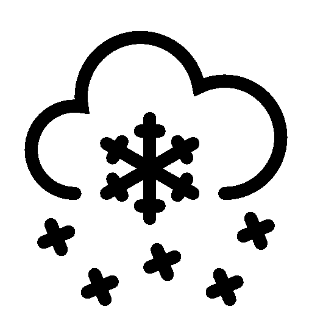

Nesus
Unidad 1:
El objetivo del curso en la primera unidad, se aprendió el uso de Python como Lenguaje de Programación, orientándonos en el uso de dataset, list, reduce, map, lambda, filter, def, condicionales for, uso de archivos tipo cls y llamadas a funciones. Por ejemplo, se ha creado código donde se puede leer un archivo cls local y a su vez guardarlo como un dataset dentro del código: Podemos observar el uso de dos clases, donde el “main” depende de la clase LoadData en este caso para crear el dataset con la información dada.Clase principal (MainClass)

Clase LoadData (LoadData Class)
En la clase main se codearon instrucciones donde se usa OOP
(Programacion Orientada a Objetos), asi llamando a la clase
LoadData y sus funciones a la clase principal.
Consecutivamente, el código muestra a su vez el llamado del
dataset de tipo de archivo .cls y tambien guardándolos en
una variable externa.
Se crea un dataset tipo diccionario (dataset temporal).
Se diseño una instrucción donde se aprecia el uso del
filtro, en el diccionario inicializado se creó una
filtración donde muestre las aves que sean mayores a 100 al
dataset tipo diccionario.
Progresivamente, se creo una instrucción mas para mostrar el
filtro aplicado al diccionario.
Se aprendió también, cómo aproximar un numero Euler.
Siguiente unidad aqui :
